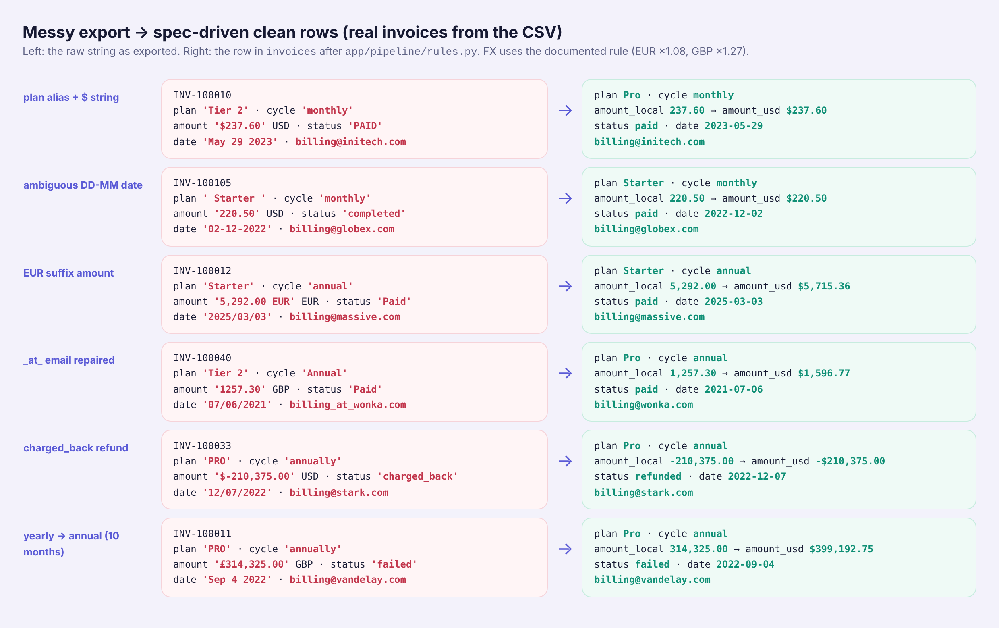
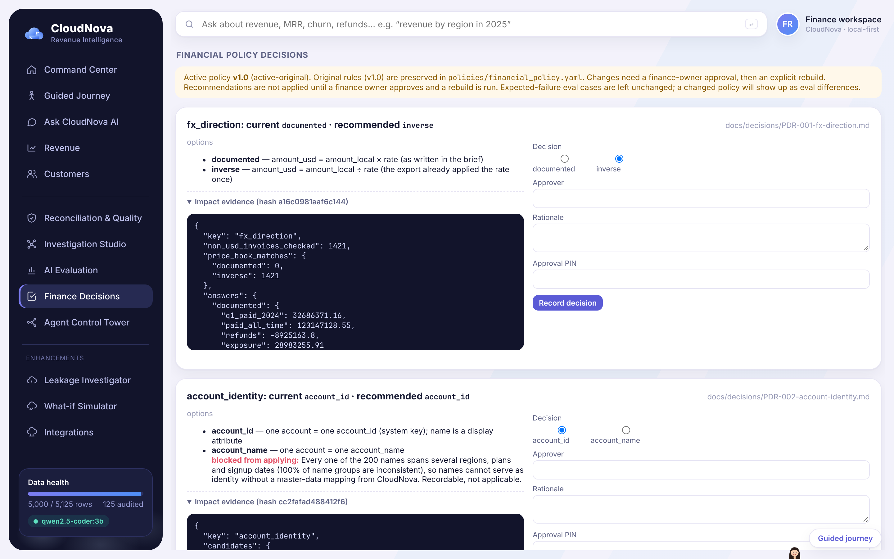
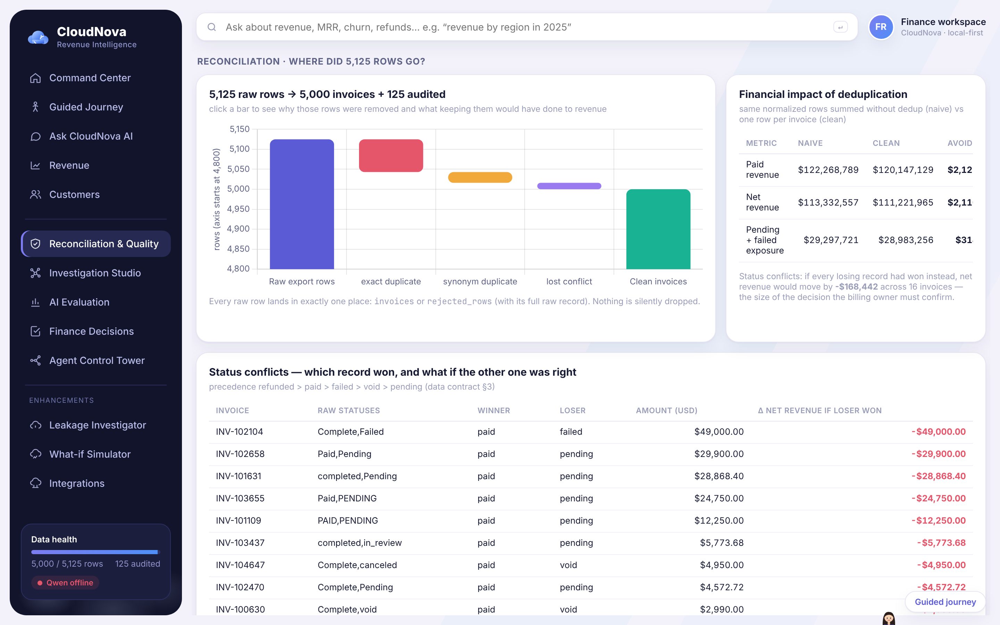
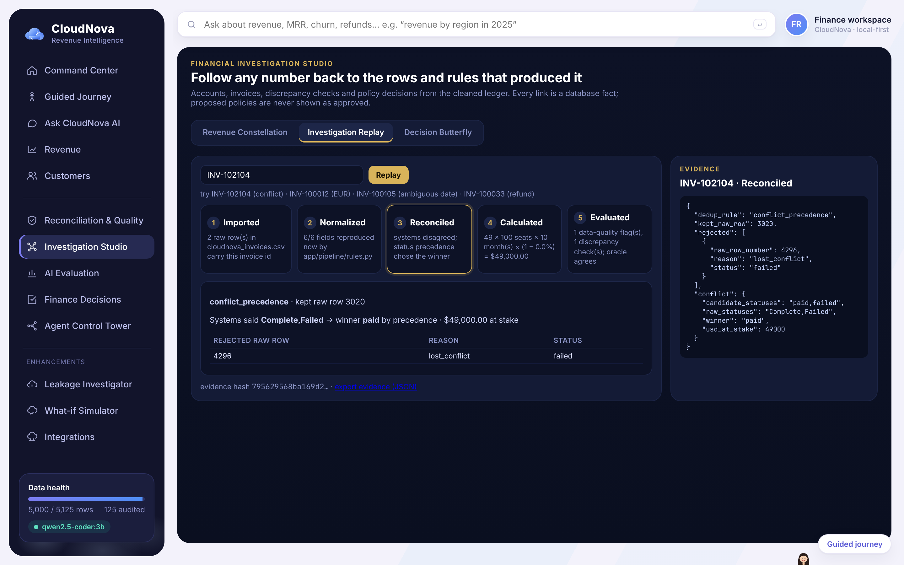
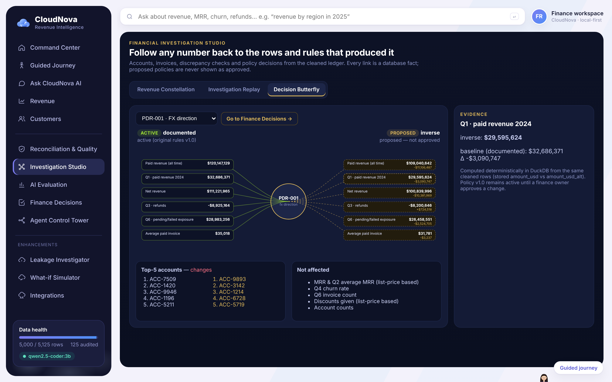
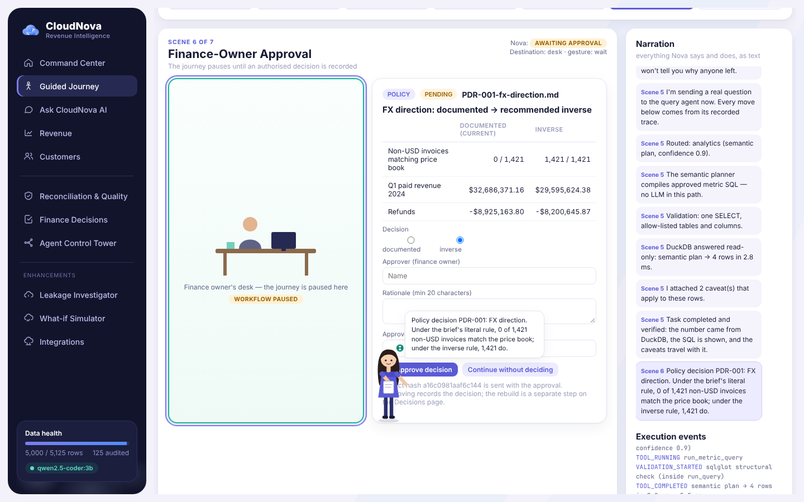

Florina · November 2026 · Track B (spec-driven pipeline + natural-language query agent) · repo github.com/florina787/Data-sets, folder cloudnova/.
Submission branch claude/great-hamilton-8s8wk9; extensions on claude/great-hamilton-8s8wk9-assurance. All figures come from the provided synthetic dataset.
CloudNova's finance lead exported their invoice ledger and asked for one thing: "We want to ask questions about our revenue and customers in plain English and actually trust the answers."
The export (data/raw/cloudnova_invoices.csv) is stitched together from an old billing tool, a CRM and a spreadsheet that finance keeps by hand. Nobody owned data quality.
The briefing (data/raw/BUSINESS_CONTEXT.md) gave hard rules — list prices $49 / $99 / $299 per seat, annual invoices bill 10 months, only paid is revenue,
refunds are negative and net against revenue, MRR = list price × seats × (1 − discount) — and six questions a stakeholder would ask. The assignment asked for a spec written first,
evidence of how I steered the AI, an eval harness with at least one expected failure, production instincts, and one command to run it.
I picked Track B. All six questions are aggregations: sums, averages, rankings. A retrieval system returns rows, not totals, and the totals are only right after duplicates are removed and the business rules are applied. SQL over cleaned data gives exact answers, and finance can read the SQL.
Before writing any rules I tested each hypothesis against the CSV with small pandas scripts. The design came from these answers, not from assumptions.
| Question | What the data showed | Decision (data contract) |
|---|---|---|
Is 01/05/2024 January or May? | First part never > 12 in 1,320 slash dates; second part > 12 in 786 | NN/NN/YYYY = MM/DD |
And 05-01-2024? | First part > 12 in 151 rows, second never | NN-NN-YYYY = DD-MM; 81 still-ambiguous rows flagged |
| How many duplicates really conflict? | 82 exact duplicate rows; 43 duplicated invoice ids, 27 differ only by status spelling | 16 real conflicts, resolved refunded > paid > failed > void > pending |
| Do amounts match the price book? | Every row equals list × seats × months × (1 − disc) × FX rate | 0 pricing violations — but see §5 |
Is account_id the customer? | 3,815 ids, only 200 names | account_id is the key (see §5) |

app/pipeline/rules.py).The result: 5,125 raw rows → 5,000 invoices + 125 rows in an audit table (rejected_rows: 82 exact duplicates, 27 synonym duplicates, 16 lost conflicts).
Summing without deduplication would overstate paid revenue by $2,121,660.87 ($122,268,789.42 vs $120,147,128.55). The 16 conflicts would move net revenue by −$168,441.54 if every losing record had won.
raw CSV (5,125 rows, read as strings)
→ app/sources/base.py CsvLedgerAdapter: enforces the 19-column raw contract, records sha256
→ app/pipeline/rules.py lookup maps (no fuzzy matching), date/amount parsers, FX, MRR
→ app/pipeline/clean.py exact dups → synonym dups → status precedence; unknown values quarantined
→ app/pipeline/build.py typed DuckDB: invoices 5,000 · accounts 3,815 · rejected_rows 125 · dedup_conflicts 16
→ app/agent/supervisor.py one query agent (harness adapted from my FloPilot project)
├─ semantic planner (app/semantic/catalog.py + planner.py): metric × dimension × filter → SQL
├─ Qwen text-to-SQL fallback (app/agent/tools.py::run_llm_sql) — only when no approved metric fits
└─ every SQL: app/governance/sql_guard.py (sqlglot) → app/db.py (read-only DuckDB, no external access)
→ python -m app (CLI + FastAPI /api/v1/* + static dashboard) · python -m evals (independent oracle)
Hand-written semantic layer (~300 lines) instead of a framework: every metric is one SQL expression I can test. pandas for cleaning, DuckDB for serving: rule functions are easy to unit-test; DuckDB gives typed, read-only SQL with no server. Static dashboard (vanilla JS + vendored Chart.js): reviewers don't need a Node toolchain.
The SQL guard parses each statement and allows only a single SELECT over allow-listed tables and columns — not a keyword blacklist. DuckDB is also opened read_only
with external access disabled and the config locked, and a test proves writes fail even if the guard were bypassed. Answers that come from Qwen are checked so they can't contain numbers that aren't in the result rows.
STATUS_PRECEDENCE = ["refunded", "paid", "failed", "void", "pending"] # app/pipeline/rules.py
BILLED_MONTHS = {"monthly": 1, "annual": 10} # annual = 12 months for the price of 10
def check_sql(sql: str, schema: dict[str, set[str]]) -> GuardResult: # app/governance/sql_guard.py
... # parse with sqlglot; reject anything that is not one SELECT over allowed tables/columns
Single command. python -m app validates config, reuses or builds the data (keyed on the raw file's sha256), connects to local Qwen (or starts it via LLM_START_CMD),
answers the six questions as a readiness check, then serves the API and dashboard. Measured from a clean shell: READY in 2.0 s (fresh build, Qwen running), 0.8 s (Qwen down → deterministic mode),
4.5 s (Qwen started by the app). Ctrl+C and SIGTERM shut down cleanly.
I used Qwen2.5-Coder-3B (Q4 GGUF) locally: no API keys, no per-query cost, and the invoice data never leaves the machine. Ollama was my first choice, but its download was blocked in my build container,
so I served the model with llama.cpp's OpenAI-compatible server. The adapter (app/llm/provider.py) talks the same API as Ollama, vLLM and LM Studio.
To find out how far the model could go on its own, I added QUERY_MODE=llm — Qwen writes the SQL for every question — and scored both modes against the independent oracle
(evals/compare_modes.py, artifact evals/results/mode_comparison.json, measured 2026-11-07, temperature 0, 4 CPU threads):
| Mode | Correct on the six questions | Median latency | Max |
|---|---|---|---|
| Hybrid (approved metrics first, Qwen fallback) — default | 6 / 6 | 10 ms | 61 ms |
| Qwen-only | 2 / 6 | 20,619 ms | 42,858 ms |
-- Q5 top 5 accounts, written by Qwen
SELECT account_id, SUM(amount_usd) AS total_revenue,
csat_score
FROM invoices WHERE status = 'paid'
GROUP BY account_id, csat_score
ORDER BY total_revenue DESC LIMIT 5
-- ignores refunds: ACC-5211 / ACC-1196 swapQ2 and Q4 failed with ambiguous joins. Q4 also invented status = 'churned' — churn is not a status. Q6 referenced a column that doesn't exist and the guard blocked it.
The one that worried me was Q5: valid SQL, a plausible answer, and wrong. A guard checks safety, not meaning. That is why approved metrics never go through the model.
Two things in the data were not cleaning problems — they were accounting policy, and the brief didn't settle them.
The brief says EUR→USD 1.08 and GBP→USD 1.27. But every EUR/GBP amount already equals the USD list price × the rate. Applying the rate again converts twice.
| 1,421 non-USD, non-refund invoices | × rate (brief, active) | ÷ rate (recommended) |
|---|---|---|
| Match the USD price book within $1 | 0 / 1,421 | 1,421 / 1,421 |
| Q1 paid revenue 2024 | $32,686,371.16 | $29,595,624.38 |
| Refunds | −$8,925,163.80 | −$8,200,645.87 |
Every one of the 200 names spans several regions, plans and signup dates (100% of name groups are inconsistent, vs 24.4% of account_id groups). Names are not a customer master,
so I recommend keeping account_id. A company-level roll-up needs a mapping from CloudNova's CRM.
I did not let the AI — or myself — pick silently. The inverse FX rule moves 2024 revenue by $3.09M; that is the finance owner's decision. So the original rules stay in
policies/financial_policy.yaml (v1.0) and are never edited by the app. A change needs the approver's name, the finance_owner role, a rationale, the operator's PIN,
and the hash of the impact report they were shown (app/policy.py::approve). Approving only records. Applying is a separate rebuild, and reverting is itself a decision.
The eval expectations are not updated automatically — a changed policy shows up as eval differences, on purpose.

| Status | What |
|---|---|
| Implemented, 11 tests | record, apply (rebuild), revert, audit log; wrong PIN / wrong role / stale impact hash rejected |
| Recommended, not applied | FX inverse rule |
| Blocked | name-based identity (needs master data) |
| Not built | real sign-in (SSO) — the PIN is demo-grade |
CloudNova's export is really three systems. So the pipeline reads through a source adapter seam (app/sources/): each adapter emits the same 19 string columns plus lineage,
and all cleaning happens once in rules.py. The CSV adapter is real. To show how a legacy system would plug in, I built a simulated legacy-billing adapter
(app/sources/legacy_billing.py + mappings/legacy_billing.yaml): pipe-delimited, amounts in cents, coded statuses, a trailer control total.
On its 12-row sample it checked the trailer, mapped 9 rows, rejected 3 with reasons (unknown code ZZ, amount N/A, date 20241341), lost 1 to the ledger's own
dedup rule, and flagged a planted 10× over-billing. It is preview-only: nothing is written to the ledger. CRM and Stripe mappings are designed in docs/INTEGRATION_ARCHITECTURE.md, not built.
For the UI I started from the finance questions, not from components: what did we earn, where did the rows go, what is at risk, what happens if we change a price, how was this invoice handled.




| Check (re-run 2026-11-07 before writing this) | Result |
|---|---|
| Unit tests, extension branch (10 files) | 156 passed |
| Unit tests, submission branch | 114 passed |
python -m evals (no LLM, as in CI) | PASS 31 · FAIL 0 · XFAIL 2 · SKIP 3 |
python -m evals --llm (local Qwen) | PASS 33 · FAIL 0 · XFAIL 3 |
| Six stakeholder answers vs independent oracle | 6 / 6, to the cent |
| Browser checks (Playwright) | 0 console errors / HTTP ≥ 400; guide inside the stage at 1920×1080, 1440×900, 1280×800, 900×1000 |
The oracle (evals/oracle.py) re-implements the spec with only the standard library and never imports the app, so the two can disagree. The three expected failures are deliberate:
the name-based top-5, Q1 under the inverse FX rule, and one Qwen SQL case. CI (.github/workflows/cloudnova-ci.yml) runs build → tests → evals → demo on every push.
"Verbatim" = copied from my messages to Claude Code in this session (excerpts). "Reconstructed" = a faithful paraphrase of an instruction, not the original wording.
I started by trying to understand the customer and their data. The model was only one part of the solution. The harder decisions involved financial definitions, system integration, validation, and making sure the customer could trust the results. Next I would get the two policy decisions from CloudNova, let Qwen fill a structured query plan instead of free SQL, and add support-ticket, tenure and cohort metrics.
| Key commits | |
|---|---|
dbcd542 | specs, reuse matrix, CLAUDE.md — before any pipeline code |
dad83db | spec-driven cleaning and DuckDB build |
d9952fa | SQL guard, semantic planner, Qwen provider, supervisor |
c33e355 | independent oracle, eval harness, unit tests |
0f27119 / 64e8750 | single-command startup, dashboard, reconciliation, /api/v1, hybrid-vs-Qwen measurement |
e205b47 / bb02947 | approval-gated policy, guided journey, Investigation Studio |